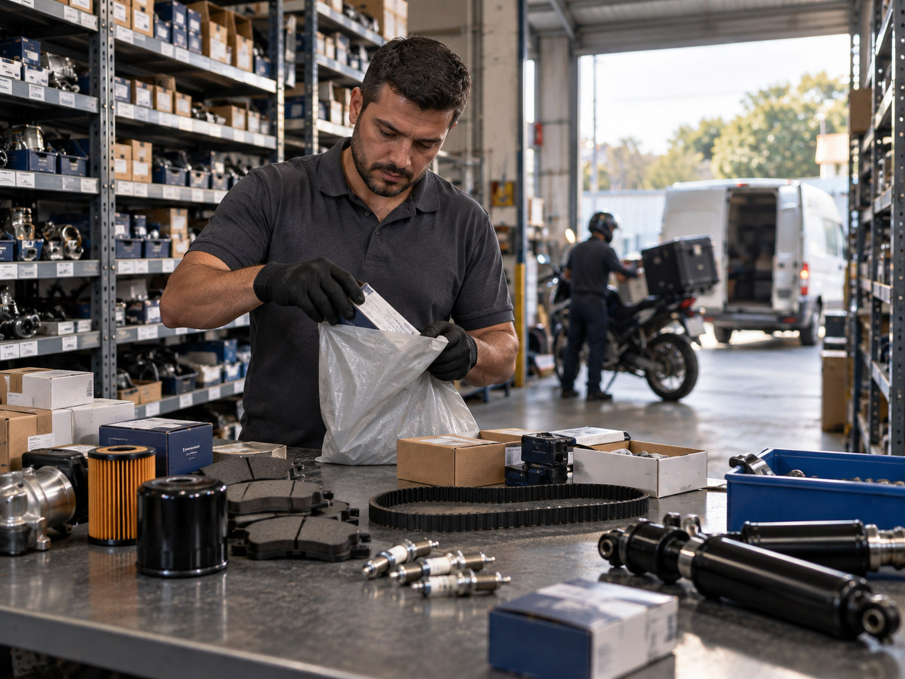
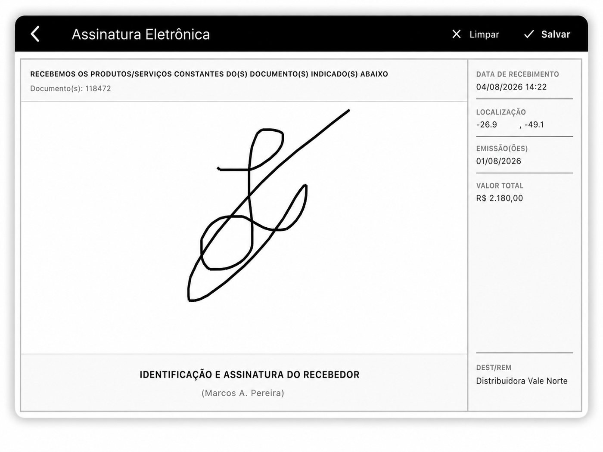

Peça parada é oficina parada.
Em autopeças o pedido não chega de manhã: ele pinga o dia inteiro, e cada um é urgente. A Grafos organiza as várias saídas do dia e mostra onde está cada entrega, para o atendimento parar de responder no achismo.

Várias saídas por dia, sob controle.
- Roteirização por onda: rode o cálculo a cada saída, com os pedidos acumulados.
- Entrega fracionada em oficinas, concessionárias e lojas na mesma rota.
- Previsão de chegada por parada, para o atendimento responder com dado.
- Comprovante digital com foto e assinatura, peça a peça.
Em autopeças, o inimigo é o relógio.
A concorrência não ganha por ter a peça. Ganha por entregar antes. Cada hora de atraso é uma oficina que liga para o próximo fornecedor.
Pedido que chega o dia inteiro
Ao contrário da distribuição clássica, não existe uma carga fechada de manhã. O pedido entra às 9h, às 11h e às 15h, e alguém decide na hora, no papel, o que sai em qual veículo.
"Onde está minha peça?"
O balconista liga para o motorista, o motorista não atende porque está dirigindo, e o cliente fica sem resposta. Rastreamento por telefone não escala em dia de pico.
Veículo saindo pela metade
Na pressa da urgência, o utilitário sai com três entregas quando poderia levar oito na mesma região. O custo por entrega dispara sem ninguém medir.
Devolução e troca sem rastro
Peça errada volta com o motorista e o registro é um bilhete. Semanas depois, ninguém sabe quem recebeu, quando voltou e onde parou.
Urgência com método.
Acumule os pedidos da onda
Planilha ou integração com o ERP. Os pedidos entram conforme são faturados, com endereço, volume e prioridade.
Roteirize a cada saída
A cada onda, o algoritmo agrupa por região e capacidade do veículo e devolve a sequência de entrega pronta. O que é urgente entra na saída mais próxima, não na próxima manhã.
Responda com previsão, não com "já saiu"
O painel mostra a posição de cada rota e o status de cada parada. O atendimento consulta e informa a previsão de chegada.


Comprovação item a item, sem bilhete.
Em peça fracionada, a divergência não é sobre a carga inteira: é sobre um item específico que o cliente jura que não recebeu. O comprovante digital fecha essa conversa no mesmo dia.
- Foto, horário e localização de cada entrega, direto do app do motorista.
- Assinatura eletrônica de quem recebeu, com nome registrado.
- Motivo padronizado para recusa, troca e devolução.
- Histórico por cliente, para expor o endereço ou o processo que sempre falha.
O que a autopeças pergunta.
A Grafos funciona para quem faz várias saídas por dia?
Sim, e é justamente o cenário de autopeças. O pedido não chega todo de manhã: ele pinga o dia inteiro. A roteirização pode ser rodada a cada onda de saída, montando a rota do próximo veículo com os pedidos acumulados até aquele momento.
Dá para encaixar um pedido urgente em uma rota já em andamento?
O painel mostra onde cada veículo está e o que ainda falta entregar. Com essa informação o gestor decide se o urgente entra na rota atual, sai em uma nova saída ou espera a próxima onda, em vez de decidir no telefone sem saber a posição da frota.
Como o cliente sabe a que horas a peça chega?
A sequência de entrega da rota gera a previsão de chegada de cada parada. O atendimento consulta o status e informa a previsão, em vez de repetir que a peça já saiu.
E as entregas por motoboy ou veículo leve?
A roteirização considera a capacidade de cada veículo, então frota mista de utilitários, vans e motos entra no mesmo cálculo. O app do motorista é o mesmo em qualquer modal.
Deixe as saídas da sua autopeças com a Grafos.
Agende uma demonstração e simule um dia real: quantidade de saídas, veículos disponíveis e os pedidos urgentes que sempre bagunçam a rota.
Agendar demonstração